Fase 4 · Tanda 3 de 3 · El admin
Las seis pantallas con las que se administra el club, capturadas contra el entorno de QA con el dataset grande, a 1440×900, con el mismo guión de medición que las nueve anteriores. Ocho estados, antes y después. El diagnóstico salió de leer las seis contra DESIGN.md y sus reglas con nombre, como en la tanda del entrenador: no había issue que las midiera.
La consigna de la fase —cambia cómo se ve, no qué hace— se cumple con la
suite entera en verde: 3133 tests en 187 archivos, ningún endpoint tocado,
ninguna regla de negocio movida. Vale doble en esta tanda porque
/payments mueve dinero real: el checkpoint de aprobación en
lote —que un pago sólo entra a un lote desde su propio detalle, con su checklist completa—
está exactamente como estaba, y lo único que cambió en esa pantalla es de qué color son los
botones, dónde vive la ayuda y en qué tipografía están los títulos.
Doce hallazgos, ordenados por lo que le cuestan a la persona que usa la pantalla y no por lo
que cuestan de arreglar. Los once primeros se arreglaron; el duodécimo es documentación y
también. Cada uno nombra la regla de DESIGN.md que rompe.
Quince botones rojos en la pantalla que mueve dinero.
La cola de validación abre en «Pendientes», y cada fila pendiente dibujaba su
«Revisar» con variant="primary": diez botones rojos en una
columna por página, quince en la insignia del riel. A los diez, el rojo dejó
de significar «esto es lo único que hay que apretar» y pasó a ser el color de la
columna — y de paso dejó a la decisión de verdad, «Aprobar pago» adentro del
detalle, vestida igual que los diez enlaces que llevan hasta ella. Estaba escrito dos
veces porque la tabla y el listado angosto son JSX separados.
62% de aire muerto, y el «Ver ayuda» que quedó flotando.
/discounts con el catálogo vacío es el número más grande de todo el
rediseño: 555px de lienzo desnudo bajo un enunciado de 265, con una
tarjeta de 610px de ancho arriba a la izquierda y un riel de 340px reservado al lado
para nada. Y encima, el pendiente que la tanda de miembros dejó anotado: el «Ver
ayuda» era hijo directo del shell —sin envoltorio, sin clase, un control subrayado de
16px solo en una banda de 20— porque perdió el mt-3 con el que se
sostenía cuando ContextualHelp dejó de llevar margen propio, y nadie lo
atajó.
Los días eran píldoras de largo variable con la palabra cortada.
/groups dibujaba un DiaTrack propio: una cápsula por día
del track de la categoría, rotulada con DIA_LABELS[dia].slice(0, 3).
Cinco cápsulas para cuatro categorías y seis para Competitivo, así que la columna
tenía filas de dos anchos distintos cuyas casillas no se alineaban — comparar dos
categorías obligaba a leer las dos. Es exactamente el problema que
WeekStrip existe para cerrar, y WeekStrip estaba escrito,
testeado y con cero consumidores. La abreviatura además llegaba al
diálogo de borrado, donde no está aria-hidden y es el único enunciado de
qué días se destruyen.
Dos proporciones y una serie, las tres dibujadas como frases.
«Membresías activas · 21 de 85 · 25% del total» y «Presentes · 118 · 54% del total»
son proporciones en un producto que exporta StatTrack para eso y lo
gasta en /members. Peor la cuarta tarjeta del panel:
buildFourWeekAttendance devuelve cuatro ventanas, cada
una con su total, sus presentes y su tasa, y la pantalla renderizaba el porcentaje
agrupado y tiraba bars a la basura. 52% podía ser cuatro semanas planas
o un derrumbe de 70 a 30, y la tarjeta se leía igual.
Ningún título de tarjeta usaba Graduate, en ninguna de las seis.
Cero font-display en /payments, /groups,
/reports y /discounts, y tres tratamientos distintos para
el mismo trabajo: text-base font-bold en el panel,
text-sm font-bold en horarios y reportes,
text-sm font-semibold en descuentos. Los de 13,5px además pasaban el
candado de tipografía por estar debajo del piso de Graduate, no por
cumplirlo.
254px de panel de filtros con la mitad derecha vacía.
FilterPanel es una columna, y para un riel está bien. Para una página no:
/attendance apilaba tres controles en los 320px de la izquierda de una
tarjeta que ocupa todo el ancho, con la mitad derecha entera en blanco. Es la deuda
que la tanda del entrenador dejó explícitamente acá, porque el mismo componente se
dibuja en el tercio izquierdo del historial del entrenador, donde apilar es lo único
que entra.
Cinco estados vacíos sin salida, y uno que no existía.
Los cuatro de /reports nombran el próximo paso en prosa —«pruebe con un
rango más amplio», «quite el filtro de horario», «elija otro estado»— y ninguno lo
ofrecía como control, aunque los tres son una llamada que la página ya tiene. El
quinto es la rama all sin búsqueda de /payments. Y el que
no existía: el panel de alumnos de /groups era
roster.alumnos.length > 0 && (…), así que una categoría sin
inscriptos renderizaba literalmente nada debajo del selector.
Dos botones rojos al mismo destino, con la misma palabra.
El encabezado de /attendance dibuja «Tomar asistencia» en rojo, y su
estado vacío dibujaba otro «Tomar asistencia» en rojo apuntando al mismo
lugar. Los dos visibles a la vez, en la misma pantalla — el «un botón por acá y otro
por allá» del cliente en su forma más literal.
Un tercer radio, en el botón compacto de todo el producto.
Button declaraba sm: "h-ctl-sm rounded-lg …" — 8px, el
único radio de ui/ que DESIGN.md no tiene, y ningún test lo
medía. Cada acción dentro de una fila del producto —las de horarios, descuentos y
pagos— se dibujaba a 8px al lado de controles de 10. Salió a la luz al cerrar la
deuda anotada: Button.test.tsx escribía sus listas de variantes a mano.
La paleta retirada, viva en el formulario de descuentos.
Los tres campos eran rounded-lg sobre
cata-border/cata-surface/cata-text con
px-2.5 py-1.5: ni el radio, ni la paleta, ni ninguna de las dos alturas
de control del sistema. El panel abierto de ContextualHelp, otro
rounded-lg sobre cata-bg — y eso lo abren
siete pantallas. Más el aviso de horarios a rounded-xl
(12px) y un hover:bg-red-50 crudo de Tailwind.
Dos abreviaturas que contradicen al CSV de su propia columna.
/reports encabezaba «Fecha Nac.» y «Responsable de Pago» mientras el CSV
que genera la misma pantalla escribe «Fecha de nacimiento» y «Responsable de pago».
Una abreviatura y unas Mayúsculas De Título, las dos discrepando con el archivo que
sale del botón de al lado.
La paleta de gráfico seguía sin estar en DESIGN.md.
La deuda que la tanda del entrenador dejó anotada con su motivo: una quinta lista de
colores viviendo en dashboard-utils.ts, alimentando ya tres pantallas.
Acá vive la dona del admin y su validador, así que acá se reconcilia.
Se mide igual que siempre: la distancia entre el borde inferior del contenido más bajo y el
fondo de la ventana, dividida por el alto de la ventana, a 1440×900, entrando con
admin@cataclub.com. Las dos rondas leen la misma base de QA.
| Pantalla | Estado | Antes | Después | Qué lo movió |
|---|---|---|---|---|
| Panel de Control | Con datos | 14% · 122px | 12% · 107px | La barra y la tendencia dentro de las tarjetas. |
| Membresías y Pagos | Cola pendiente · 15 | 0% | 0% | Scrollea: 1078px → 1094px de documento. |
| Membresías y Pagos | Búsqueda sin coincidencias | 44% · 397px | 25% · 229px | El enunciado se estira dentro de la tarjeta. |
| Horarios | Cinco categorías | 34% · 308px | 35% · 316px | Sube: la franja mide menos que las píldoras. |
| Asistencias | Este mes · 218 registros | 0% | 0% | Scrollea, y el documento baja 69px. |
| Descuentos | Catálogo vacío | 62% · 555px | 38% · 340px | El riel se va y el enunciado se centra — ver abajo. |
| Reportes | Este mes · 87 personas | 0% | 0% | Scrollea: 1199px → 1201px de documento. |
| Reportes | Rango sin datos · enero 2019 | 22% · 194px | 15% · 137px | Entró la salida que las cuatro no tenían. |
El guión mide la última hoja del árbol, y con la tarjeta estirada el enunciado queda centrado adentro de ella, así que la hoja más baja cae a mitad de camino. Medido sobre el borde inferior de la última superficie —que es donde termina visualmente la página— el lienzo desnudo pasa de 455px (51%) a 32px (4%): la tarjeta llega ahora hasta los 868px de una ventana de 900. Los dos números están acá porque el primero es el que la tabla viene publicando desde la primera tanda y el segundo es el que describe esta pantalla; cambiar la definición a mitad de la fase haría incomparables las nueve anteriores.
Horarios sube ocho píxeles, y es la misma clase de número que el recibo del entrenador: lo que se fue fue alto. Las cápsulas de día medían 26px de insignia y la franja mide 20px de casilla, así que las cinco filas terminan más arriba y el hueco de abajo mide más. Bajarlo pedía dejar las píldoras puestas. Lo que esta pantalla ganó no se mide en el eje vertical: se mide en que sus cinco filas por fin se pueden comparar de un vistazo.
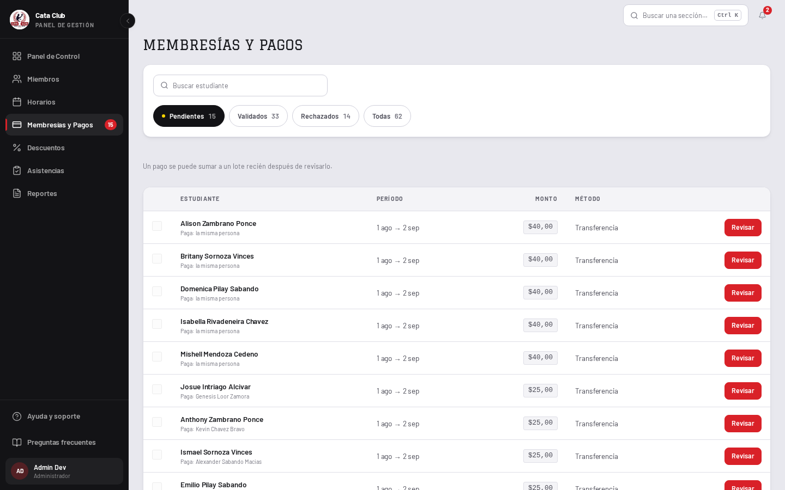
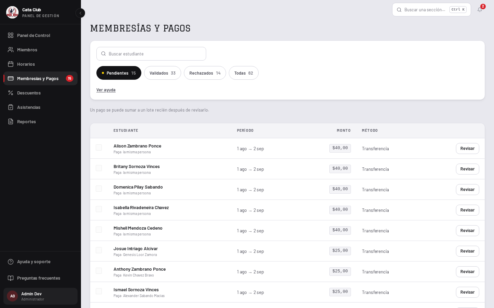
Lo que no se tocó, y es la mitad del trabajo.
Ninguna regla de negocio, ningún endpoint, ninguna validación. El checkpoint de
aprobación en lote está intacto: un pago sigue entrando al lote sólo desde su propio
detalle y con su checklist completa, markReviewed sigue guardando el período
exacto que el admin vio, las casillas de la fila siguen renderizadas-pero-deshabilitadas
con su motivo citado por aria-labelledby, y batch.run() sigue
siendo N llamadas secuenciales con su recuperación parcial. Los 101 tests de la pantalla
pasan sin que se renegociara uno solo.
El techo de la cola, dicho en voz alta.
Las cuatro píldoras cuentan «Pendientes 15 · Validados 33 · Rechazados 14 · Todas 62», y
se leen como los totales del club. Son los totales de lo que esta página trajo,
que el BFF pide con limit=200. /members ya declara el mismo
techo en la misma ranura —la cuarta de FilterPanel, que esta pantalla dejaba
vacía—, y acá vale más porque el número es una cola que alguien está vaciando.
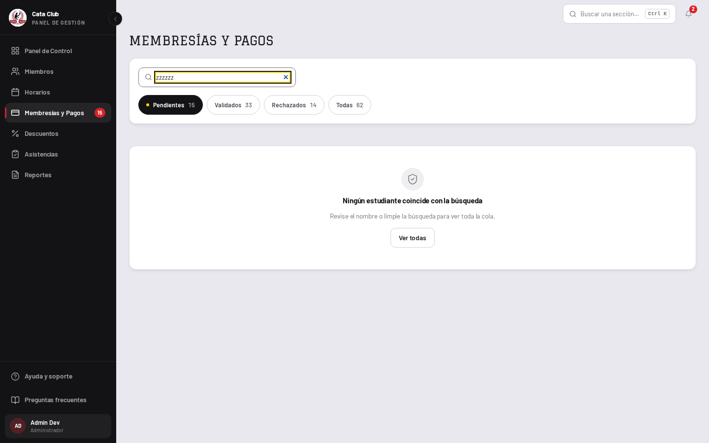
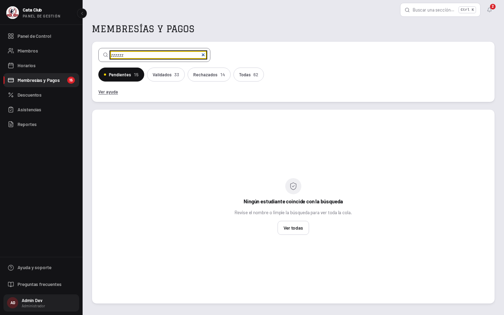
/members ya midió sobre este componente.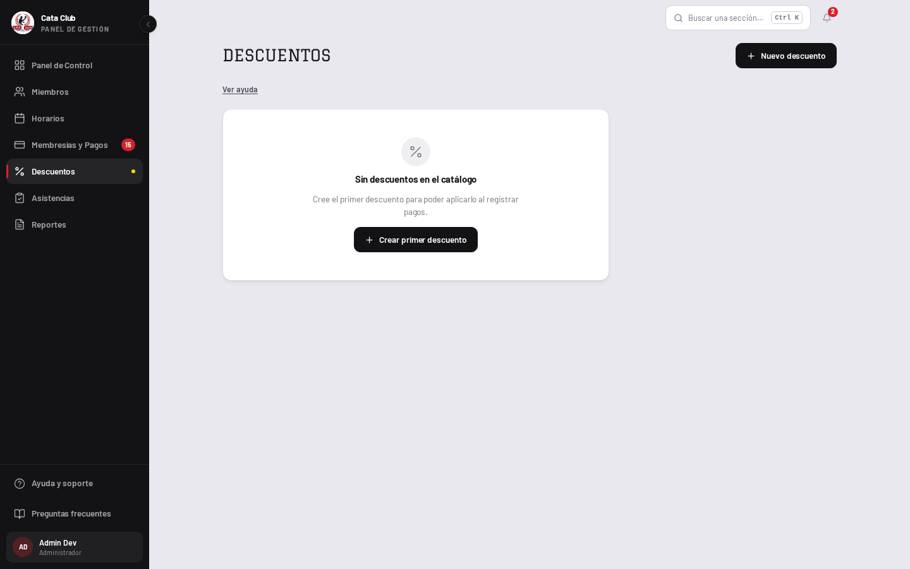
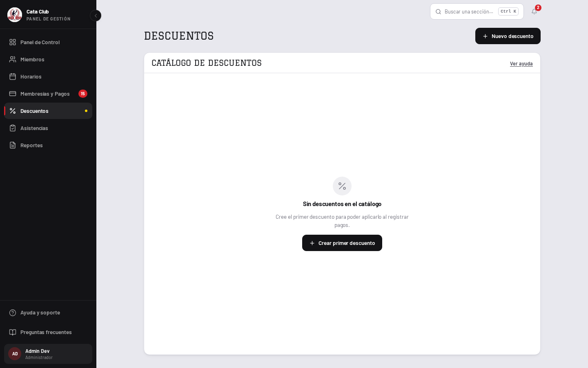
El riel deja de reservarse cuando no hay ninguna fila que sostener. El argumento del riel está escrito en el archivo y es bueno: la fila que se está editando no se tiene que mover, así que la grilla mantiene sus dos columnas haya formulario o no. Ese argumento cubre todos los estados que tienen filas y no dice nada del catálogo vacío, donde no hay fila que proteger y los 340px eran una columna en blanco al lado de una tarjeta cuyo mensaje entero es que no hay nada. Con una fila, o con el formulario abierto, la grilla vuelve y es incondicional otra vez — hay un test para cada una de las dos mitades.
D11c dice que la ayuda vive en el bloque que explica. Las tres reglas que abre —un descuento
se desactiva y no se elimina, editarlo nunca reescribe el historial, y aplicarlo pasa en
otra pantalla— son las tres sobre el catálogo, así que su bloque es la
tarjeta del catálogo, en la tira de encabezado al lado del título. Es la misma ranura que
/members le da a su propio aviso: la última del bloque que lo posee. Y sigue
estando cuando el catálogo está vacío, que es el estado que más necesita las reglas.
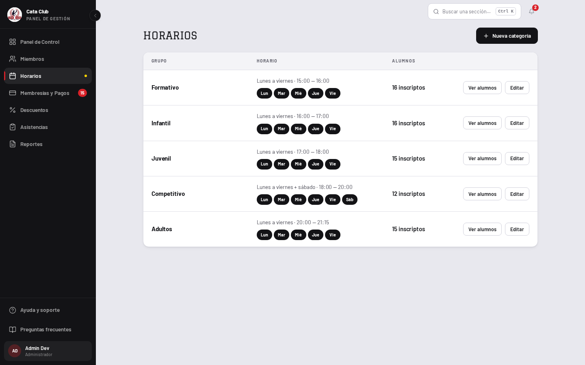
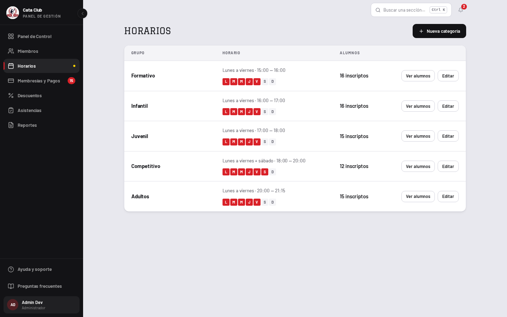
El componente existía, con su porqué escrito, y tenía cero consumidores.
ui/WeekStrip estaba construido y testeado —incluida la excepción declarada a
la regla de las palabras, que las letras son posiciones de una escala y no
palabras abreviadas, con el nombre completo del día para el lector de pantalla— y no lo
llamaba nadie. /groups es su primer consumidor.
El tercer estado no se perdió: se mudó adentro de la franja.
La pieza local codificaba tres cosas —el día que la categoría dicta, el día que
podría dictar y no dicta, y el día fuera de su track— y eso es información con la
que un admin decide, no decoración. La franja gana un permitidos opcional: el
día disponible y sin usar es un contorno punteado sobre el relleno apagado, que es
exactamente el tratamiento que la pantalla ya usaba para ese hecho. Quien no pasa
permitidos obtiene la franja de dos estados de siempre.
Las dos tablas de días se unen por la palabra, no por la posición.
/groups lee un endpoint que no pasa por la traducción del BFF, así que
sostiene "LUNES" mientras la franja habla "lun". Emparejarlas
por índice funcionaría hoy —las dos son lunes-primero y de siete— y se rompería en
silencio el día que alguna se reordene, con la falla apareciendo como una casilla
encendida en el lugar equivocado. Se emparejan por la etiqueta que las dos imprimen, que
es el hecho que genuinamente comparten, y un desajuste devuelve null en vez
de una respuesta plausible y equivocada.
Y la abreviatura salió de donde más dolía.
Adentro de la fila estaba aria-hidden, con la frase de horario diciendo los
mismos días en palabras justo encima. En el diálogo de borrado era el
único enunciado de qué días se van a destruir: «todos sus días: Lun, Mar,
Mié…», en una confirmación que desasigna alumnos. Ahora lista con
joinWithY, que es la misma función con la que la franja arma su etiqueta
accesible, así que el diálogo y la franja nombran una semana igual.
El estado vacío que este panel no tenía —una categoría sin alumnos inscriptos, que renderizaba literalmente nada debajo del selector— existe ahora y no se pudo capturar: las cinco categorías del club tienen entre 12 y 16 alumnos, y vaciar una de verdad para sacar la foto es mover datos reales, que es lo que D14 prohíbe. Está cubierto por su test, no por una captura.
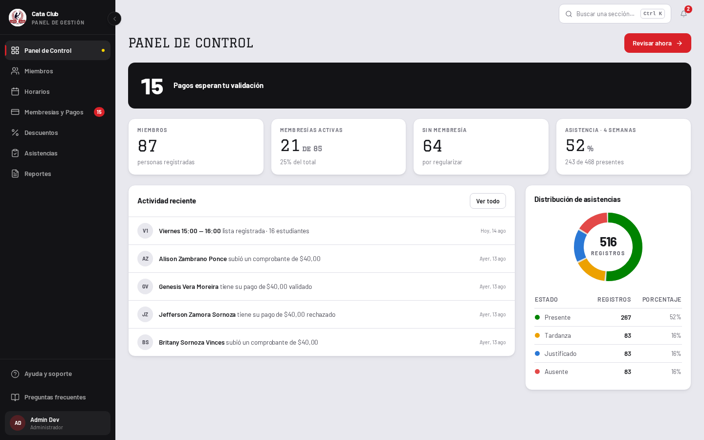
display sin la familia display.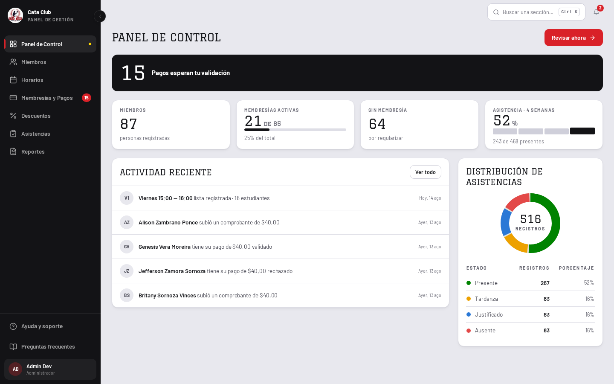
No se inventó un dato: la serie ya estaba en la página.
buildFourWeekAttendance devuelve bars —cuatro ventanas de siete
días, cada una con su total, sus presentes y su tasa— y la tarjeta renderizaba sólo el
porcentaje agrupado. La llamada que las alimenta pagina el rango completo en el
BFF, así que las cuatro ventanas están enteras y no son el primer tramo de un listado
truncado; si lo fueran, dibujar una tendencia sería dibujar una caída falsa. Cuando no hay
registros la serie viene vacía y StatSpark no renderiza nada, así que una
tarjeta callada se queda callada en vez de dibujar cuatro barras de cero.
La barra se escala contra la semana más alta, no contra 100.
Las tasas de asistencia viven en una banda —48 a 70, no 5 a 95— y contra un techo fijo de 100 esas cuatro salen casi iguales: una tendencia dibujada con tanta fidelidad que no se puede leer. El máximo de la serie es el riel. La cifra absoluta sigue impresa encima, así que el número que nadie puede malinterpretar es el que está dicho en palabras.
Y el hombro se quedó donde estaba, con tres arreglos invisibles.
La tarjeta de caucho de «15 pagos esperan tu validación» era la única cifra estadística
del producto que no estaba en Graduate: llevaba text-display —el
tamaño— sin font-display, y encima font-extrabold, un
peso que esa fuente no dibuja porque tiene un solo corte de 400. Es el mismo pedido que
StatCard ya tiene anotado haber sacado de su propia cifra. Su relleno de 24px
pasó al escalón de página.
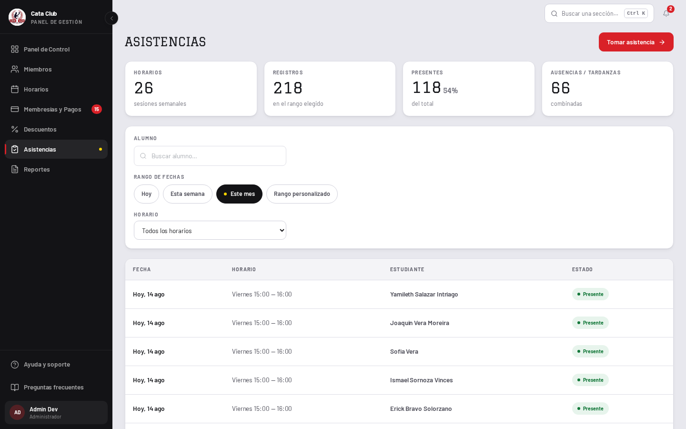
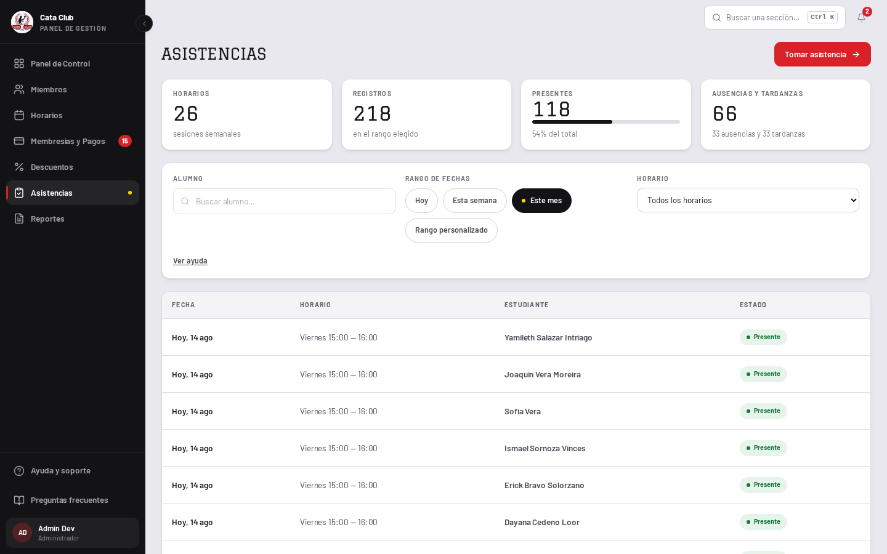
El eje es del que llama; el orden no.
FilterPanel gana un layout, y sólo eso. La
secuencia de ranuras —buscador, píldoras, campos, y la advertencia al
final— es idéntica en los dos ejes, porque «una pantalla no puede expresar el orden
equivocado» es la razón entera por la que el componente existe, y una escotilla que
además reordenara devolvería exactamente lo que se había sacado. El historial del
entrenador sigue apilado, que es lo único que entra en su tercio.
Y el segundo botón rojo se fue.
El estado vacío ofrecía «Tomar asistencia» en rojo apuntando al mismo lugar que el rojo del encabezado, con los dos visibles a la vez. Ahora es secundario: la salida sigue estando, la pantalla vuelve a tener una sola acción primaria.
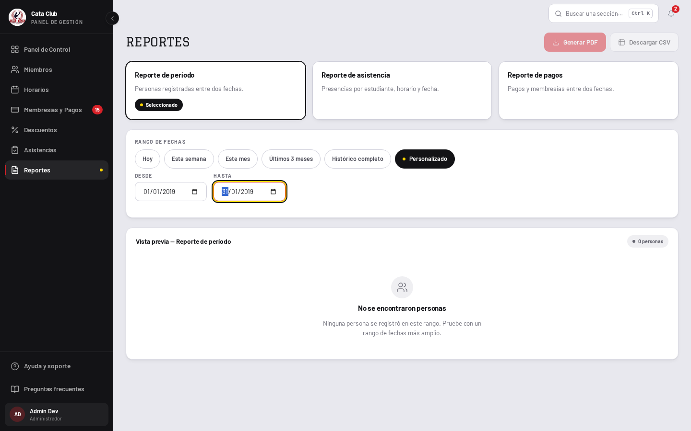
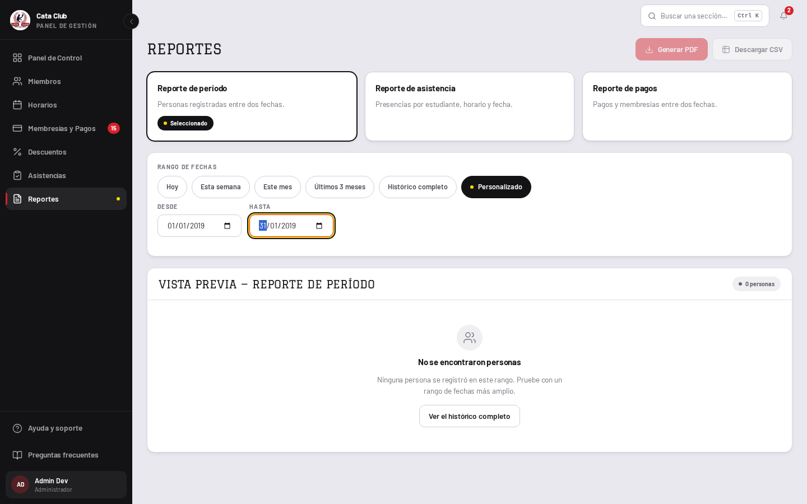
Button.test.tsx nunca midió onCoal — cerrado.
Sus dos barridos escribían la lista de variantes a mano
(["primary", "secondary", "dark", "tertiary"]), los dos se escribieron antes
de que onCoal existiera y ninguno creció con él. Así que el barrido que
prueba que toda variante mide 40px y el que prueba que ninguna otra es roja
estaban salteando en silencio un quinto del sistema. Ahora
BUTTON_VARIANTS es un valor y el tipo se deriva de él: una sexta variante
entra a los dos barridos el día que existe, o no compila. El guardián que leía la unión
por texto lee el arreglo, que es la misma declaración un nivel antes.
Y cerrarla destapó un radio que nadie medía.
SIZE.sm era rounded-lg: 8px, el único tercer radio de
ui/, sin un solo test encima. La forma decía «esto es una categoría un poco
distinta de cosa», que es justo lo que los dos radios existen para decir y justo lo que no
es verdad acá. Un botón compacto es un botón.
La paleta de gráfico, declarada.
Entra a DESIGN.md y a su sidecar
.impeccable/design.json con sus cuatro valores, su orden —que es parte de la
medición y no una preferencia— y el motivo por el que no es la rampa de estados: los
tokens de insignia fallan los chequeos de pares adyacentes cuando se ponen lado a lado en
una figura, y eso es exactamente lo que es un segmento contra sus tres vecinos. Una
insignia es una píldora sola y se queda con la rampa. La deuda venía anotada de la tanda
del entrenador con ese porqué escrito; se cierra donde vive la dona.
La cédula de la vista previa de reportes.
«Don't poner un dato en una grilla si no sirve para decidir o para encontrar» retiró la cédula de la tabla de miembros. Acá se queda, y la diferencia no es de gusto: esta grilla no es un listado, es la previsualización de un documento. La vista previa y el PDF se piden con parámetros idénticos, así que sacarle una columna a la vista la haría mentir sobre lo que el botón de al lado va a descargar. Cambiar el documento es comportamiento.
Los 35% de Horarios.
Medidos y sin cerrar. Cinco filas de categoría es todo lo que esta pantalla tiene, y no crece: el club dicta cinco categorías. Estirar la tarjeta al alto de la ventana mueve el hueco adentro de un borde, que es la reversión que la tanda del socio ya midió con 200px de marco vacío bajo una sola fila. Lo único que llenaría la fila con contenido real —cuántos alumnos tiene cada día, no cada categoría— exige una llamada nueva.
La columna «Horarios» de /attendance, que no filtra.
«Horarios · 26 · sesiones semanales» es un conteo global sentado en una fila de tarjetas que sí responden al filtro: cambiar el rango mueve las otras tres y esa se queda quieta. Es correcto —son las sesiones semanales del club, no del rango— y es confuso. Arreglarlo pide decidir si la tarjeta cuenta horarios con registros en el rango, que es otro número y otra consulta. Queda anotado.
El cero silencioso del panel.
Si fetchAttendanceRecords falla, el panel deja records = [] por
diseño —una tarjeta secundaria caída no debe tumbar el tablero— y la cuarta tarjeta lee
«0% · 0 de 0 presentes», que es indistinguible de «el club no tuvo asistencias». La
tendencia nueva no empeora eso: con la serie vacía no dibuja nada. Distinguir «no hay» de
«no se pudo leer» pide un estado de error por tarjeta, que es comportamiento, y es la
misma distinción que /members ya resolvió con una raya en lugar de un cero.
La columna «Edad» de reportes, que ningún endpoint devuelve.
Se calcula en el navegador contra new Date(), así que un reporte de un
período pasado muestra la edad de hoy, y el cruce de YYYY-MM-DD como
UTC contra un mes y día locales corre el límite del cumpleaños un día en Guayaquil. Es un
defecto real y es de datos, no de forma: va como issue con su test, no como un cambio de
estilo en una fase que promete no tocar comportamiento.
El aviso propio de Horarios, que corre en paralelo al toast.
La pantalla dibuja su propia tira de éxito/error y llama al toast global en el mismo manejador, así que una creación exitosa se anuncia dos veces. Se le corrigió el radio (12px → radio de tarjeta) porque eso es forma; unificar los dos avisos es sacar un mecanismo de notificación, y eso se ve pero no lo es.
Suite completa, tipos y lint sobre este cambio:
npm test — 187 archivos, 3133 tests, todo en verde (eran 3101; el neto son treinta y dos casos nuevos y seis renegociados).
npm run type-check — sin errores.
npm run lint — sin advertencias.
Los seis renegociados llevan el motivo escrito adentro, que es la única forma en que un
candado se puede aflojar, y cinco de los seis quedaron más estrictos que antes:
los cuatro de los marcadores de día ahora asertan siete casillas fijas donde antes
asertaban la lista de largo variable que rompía la regla, y el guardián del botón lee el
arreglo del que se deriva el tipo en vez de la unión. El sexto es el rótulo del centro de la
dona, que pasó de REGISTROS a la palabra «Registros» y se acotó al SVG porque la
tabla de la leyenda tiene una columna con ese nombre. Y dos candados fallaron a favor,
cada uno respondido donde correspondía: el de la paleta cruda pedía un cambio en el
test —/groups pagó su única deuda y la lista congelada tiene
que encoger, que es literalmente lo que ese caso existe para forzar—, y el de la cara display
pedía un cambio en el código: la cifra del centro de la dona pasó a Graduate
sin declarar su tracking, y el guardián no la dejó pasar hasta que lo declaró.
Las capturas se regeneran con el guión de medición contra QA en
http://localhost:3000, a 1440×900, entrando con
admin@cataclub.com. El índice de todas las comparaciones está en
README.md.